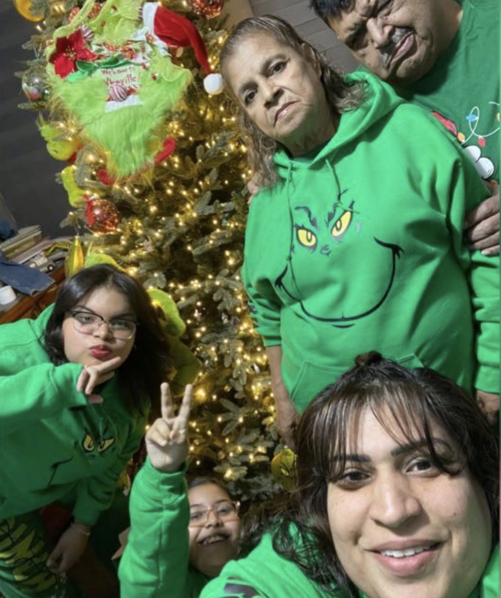

Mi familia es lo mas importante en mi vida, son mi razon de seguir aqui y aunque no es perfecta, me siento comoda con ellos y no lo cambiaria por nada.

MI ABUELA(Ernestina)
Primero esta mi abuela, la razón de mi primer nombre "Ernestina". Ella me crió y cuido toda mi vida y aun lo sigue haciendo ya que no pude vivir con mis padres por muchas razones. A ella le debo mi vida entera, mi educación, mis modales, valores y todo, ella fue mi pilar y aunque no vivi la infancia perfecta, ella y mi abuelo hicieron todo para darle lo mejor, no todo, pero lo suficiente para ser feliz y crecer sana y feliz. Ella es dura, como un militar, no enseña sus emociones y rara vez la hacen sonreir pero aun asu me fui acostumbrando a esa personalidad aunque al principio creia que era porque no me queria o algo hacia mal y me costó mucho enterder eso, llore, me pregunte que hacia mal hasta que un dia por fin comprendi que esa era su forma de ser con todos y no solo conmigo.
MI ABUELO(Alfredo)
Mi abuelo es la persona mas importante en mi vida,bueno era porque lo perdi el año pasado y eso me destrozo mucho al grado de querer irme con el y dejar todo porque sentia que la vida sin el no valia la pena, no tenia sentido sin que el me hiciera sonreir o reir cada dia. mi familia siempre fue distante, a tal grado de que mis abuelos peleaban a cada rato y menospreciaban a mi abuelo y eso yo lo odiaba ya que el era mi persona favorita en el mundo y verlo solo me partia el corazon asi que me aleje de mi mama y mi abuela por rencor, no comia a menos que estuviera sola o con mi abuelo y lloraba cada noche por la tristeza que el debio de sentir cada dia solito, hasta que un dia se enfermo ya que no despertaba aunque estaba conciente y yo fui a la escuela sin darme cuenta de eso pero algo me decia que el estaba mal hasta que esa tarde me sacaron de la escuela porque la ambulancia se habia llevado a mi papa. Duró 4 meses internado y en caa hasta que una tarde mi mama y mi abuela llegaron del hospital con la noticia de que mi papa habia fallecido, yo de la impresión me desmallé, y desperte en el sillon llorando, y si el 5 de mayo se convirtio en el dia mas triste de toda mi vida porque la unica persona en la que podia confiar me habia dejado sola en una casa llena de personas en las cuales no confiaba. El siempre me dio todo, mi papa nunca estuvo para mi pero mi abuelo si, pagó mi hospital cuando nací, mi ropa, juguetes y todo lo que yo quisiera, siempre me hacia reir, me apoyaba en todo, si queria hacer un deporte el me llevaba y me daba consejos, escuchaba todos mis problemas y me daba consejos para solucionarlos, siempre estaba para mi y todas sus hermanas decian que no paraba de hablar de mi con ellas, que para el era su hija y no su nieta a la que tuvo que criar porque sus papas no tenian el tiempo y que era su favorita tanto asi que me amaba mas que a sus propios hijos, se aseguro de que a mi nunca me faltara nada incluso si el se iba y no regresaba. El fue todo para mi y aunque me siento vacia sin el. tengo a la itzel que aunque no lo podra remplazar ella es la unica que me mantuvo aqui cuando me queria ir con el.
MI MAMÁ(Ernestina)
Mi mamá se llama Ernestina tambien, asi que en la familia somos tres con ese mismo nombre. Ella es más una hermana para mi ya que yo no crecí con ella entonces de cierto modo no desarrollé ese instinto de verla como madre aunque eso no significa que no sepa que es mi mamá o que no la respete como tal. Ella fue mamá por accidente aunque se que me quiere mucho, yo siempre le digo que ella de milagro fue mamá porque aunque tenga dos hijas no se comporta como mamá regañona y asi, sino como una hermana o una amiga en la cual puedes confiar, puedes reir y contar tus problemas o chismes de la escuela, aunque cuando tiene que ser mamá es mamá y una muy comprensiva y protectora. Tambien no es una mamá normal ya que el tiempo que viví con ella de muy chiquita sentia que aprendimos las dos a vivir, mi mamá siempre me hizo independiente, si no podia hacer algo y le decia, "mamá no puedo", uyyy no era lo peor, me decia "y porque no puedes eh, te falta un brazo, una pierna?, y aunque suene feo ella lo hacia con la intención de que cuando fuera grande no necesitara de nadie mas para poder hacer mis cosas y ser feliz y eso o agradezco mucho. Ella fue una mamá de los 2000s asi que siempre estaba a la moda, me vestia bien y escuchabamos musica de esa epoca y de los 90s, de hecho mi cancion favorita es "My Humps" de Black Eyes Peas desde que tengo memoria y hasta la fecha lo sigue siendo y es un gusto musical que saque de ella. Aunque ella no me crió, no vivi con ella, no creci con ella por problemas de tiempo, trabajo y familiares se que es una buena mamá y me parezco mucho a ella y me enorgullece.
MI HERMANA
Mi hermana es una mini version de mi, incluso se parece demasiado a mi aunque no tanto en la personalidad, ella es mas terca, llorona y solitaria aunque eso no tiene nada que ver en como nos llevamos, somos como uña y mugre, siempre estamos juntas y mi mamá dice que estamos tristes cuando no estamos con la otra. Siento yo que ella me entiende, aunque sea siete años menor, simpre de chiquita queira una hermana porque todos en la escuela se miraban felices con ellas y me sentia sola ya que no tenia con quien hablar y llegó ella un 12 de marzo del 2015 para cambiar mi vida. De chiquitas no nos veiamos mucho ya que ella vivia con mi mamá y yo con mi abuela y viviamos muy lejos de la otra pero cuando nos mudamos nos volvimos mas cercanas y lo somos hasta el dia de hoy auqnue no dejemos de pelear, seguimos siendo unidas
Volver al inicio